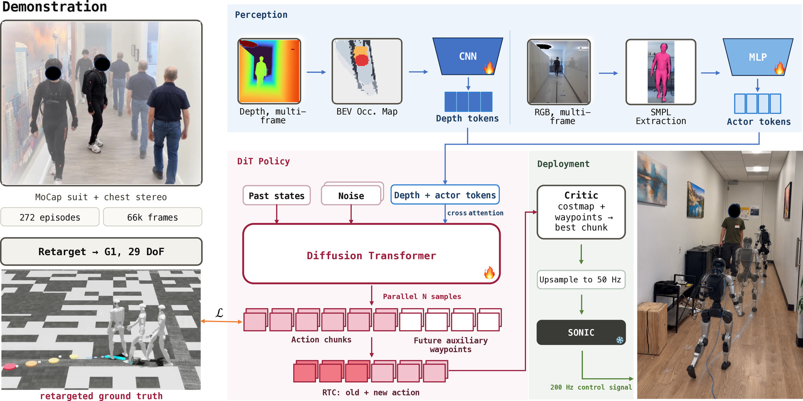
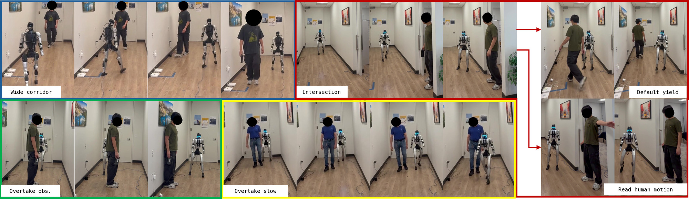
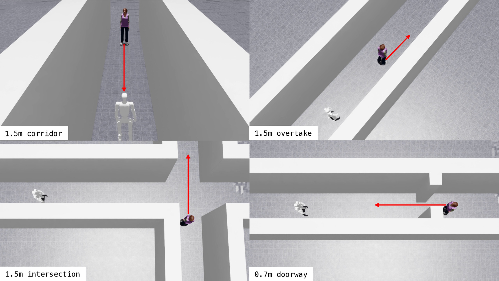

loading
Head-on pass, 1.7 m corridor
SuccessA clean head-on encounter in the wider corridor. The robot commits to one side well before the pedestrian arrives and holds that offset through the pass.
from Paired Egocentric Perception and Motion-Captured Actions
Paper under double-blind review · all media recorded on a Unitree G1
Social navigation requires more than collision avoidance: a robot must move in ways people can anticipate and respond to. Existing approaches largely reduce navigation to a 2D path executed through velocity commands. For humanoids, this abstraction overlooks articulated geometry, legible whole-body motion, and biped locomotion dynamics.
We propose MINGLE, which learns whole-body humanoid social navigation from paired human demonstrations: egocentric RGB-D records what the navigator perceives, while motion capture records the whole-body action taken in response. Using a portable capture rig, we collect 272 episodes across five interaction families and retarget the motions to a Unitree G1. A geometry- and pedestrian-conditioned diffusion policy combines a history bird's-eye view of scene geometry with the pedestrian's articulated motion to predict short-horizon whole-body actions and longer-horizon navigation waypoints, executed by a general-purpose whole-body controller.
Experiments in simulation and on a real Unitree G1 show that MINGLE improves safety and navigation efficiency over conventional velocity-based social navigation, enabling the humanoid to negotiate shared space through whole-body motion.
demonstration episodes, 66k frames, paired egocentric RGB-D and full-body motion capture
whole-body joint targets plus root motion, predicted directly instead of a 2D twist
Two and a half minutes covering the capture rig, the policy and the hardware results. Captioned on screen; the clip carries no audio.
This is the anonymous accompanying video submitted with the paper. Faces are blurred throughout and it has no audio track.
Capture human social navigation, turn it into humanoid demonstrations, and learn whole-body reactions from it.

One operator wearing an Xsens suit and carrying a ZED 2i at chest height walks through corridors, doorways, intersections and overtaking encounters. No external cameras, no markers, no map — the rig can be carried into an arbitrary scene.
The demonstrator's whole-body motion is retargeted to a 29-DoF Unitree G1, and the other person's articulated pose is recovered from the same egocentric video. Each episode pairs the observed scene with a robot-executable action and the motion it responds to.
A diffusion transformer denoises one-second chunks of joint targets and root motion, conditioned on a history BEV occupancy map, the pedestrian's pose tokens and the robot's own recent state. A critic scores parallel samples; SONIC tracks the winner at 50 Hz.
Four interaction families on a Unitree G1, with a person walking of their own accord. Switch between the third-person camera, the onboard dashboard, and the raw egocentric streams the policy actually sees.
A clean head-on encounter in the wider corridor. The robot commits to one side well before the pedestrian arrives and holds that offset through the pass.
The side corridor is hidden by the corner until late. When the pedestrian appears the robot yields by default and lets them cross first.
The same blind corner, but the person stops and motions the robot on. The policy reads that whole-body motion and resumes walking, which a 2D position alone would not convey.
The lane is narrowed by an obstacle with the pedestrian ahead of the robot. It closes on the walker and passes on the free side, drawing its arms in as the gap tightens.
The pedestrian walks the same way at roughly a third of the robot's speed, so the robot must close, wait for room and then pass.
A stress test outside the evaluation protocol: the person repeatedly steps into the robot's path instead of cooperating.
Every clip carries five synchronized views. Third-person is the external recording of the trial; onboard dashboard combines the egocentric streams with the policy's own BEV maps and telemetry; ego RGB and ego depth are the ZED 2i streams; BEV occupancy is the history map the policy is conditioned on. See all 17 clips, including the failures →

The four encounter types, rebuilt from primitive geometry so the same situations can be replayed in the simulator.

MINGLE in the simulated corridor. The policy rotates its torso to make room rather than holding the centre line until the last moment.